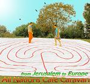

transforming CHECKPOINTS into MEETING-POINTS
| home |
| about |
| work |
| story |
| team |
| schedule |
| links |
| NANA THEATER |
“This, then, is the great humanistic and historical task of the oppressed: to liberate themselves and their oppressors as well... Only power that springs from the weakness of the oppressed will be sufficiently strong to free both…striving so that these hands — whether of individuals or entire peoples — need be extended less and less in supplication, so that more and more they become human hands which work and, working, transform the world.”Paulo Freire, Pedagogy of the OppressedThe Ein Karem Arab-Israeli youth theater group is working since January 2006 with original stories such as 'Behind the News - a Teenage Wedding" and adapting classic plays to the Middle East reality as we did with Brecht´s "Caucasian Chalk Circle". This project, originated and hosted by the Ein Karem Intercultural Center, directed by Dhyan Or in cooperation with Alaa' Barhoom from Ein Rafa village, and funded through the Jerusalem Foundation, is drawing Muslim, Christian and Jewish youth and puts them together on one stage. There, their cultural differences are expressed and dealt with, only to bring actors and audiences alike in touch with their common humanity and feel how similar they really are. |
DONATE
Listen to the Caravan CD and Order it Online...
CONTACT US |